Objects are represented as nodes. We'll call these object nodes. The payload indicates the class of the object and in the case of primitive objects also its value. (Alternatively, perhaps we could have an edge to the class.) Nodes representing complex objects have children which are called location nodes. Similarly arrays are nodes whose children are location nodes representing the array's items.
The payload of a location node holds the name of the field (or the number of an array item). An edge leaves the location node and targets the node's value.
Here is a picture. Objects are blue. Locations are pink.
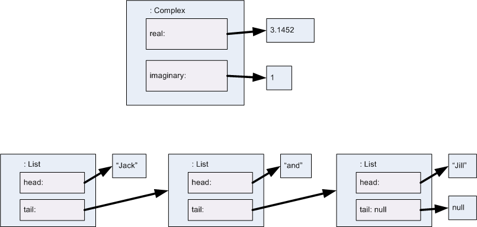
When a new execution is started (e.g. by clicking on a "Play" button), a copy of the world graph is made and a new evaluation stack is created to represent the main routine.
The evaluation stack represents control information as well as information about the value of already evaluated expressions. Each item on the evaluation stack has a copy of a method body. Edges connect the nodes of the (copy of the) method body to objects. These edges need to be erased once they are no longer needed. Because of recursive calls, we need to use copies of the method bodies, not the originals. In addition to the copy of the method body, each item of the evaluation stack also has a stack of edges to selected nodes. The target of the top of this stack is known as the currently selected node. As a payload, these edges have some additional information. Typically this is the number of step messages that have been sent to the node since it was selected and so the default is 0.
Let's look at the evaluation of a single method. Note these pictures are just meant to indicate structure, not presentation
I'll assume the message is absdiff(3, 4.5).
Initially the parameters are set, as shown. The SEQ node is selected.
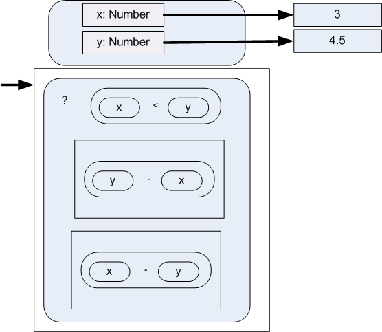
After three steps, we have the following situation where the currently selected node is ready to obtain a value.
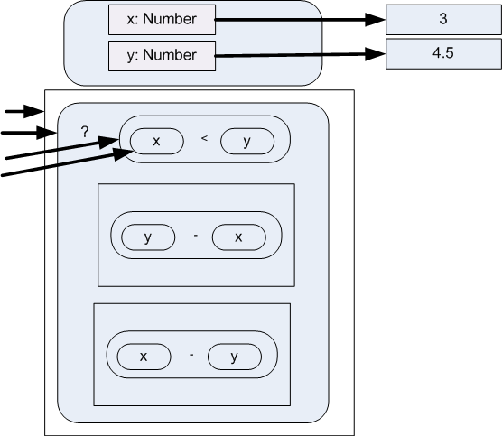
After one more step, the x node has a value. At this point the < node is again the currently selected node. After another step, the y node is selected.
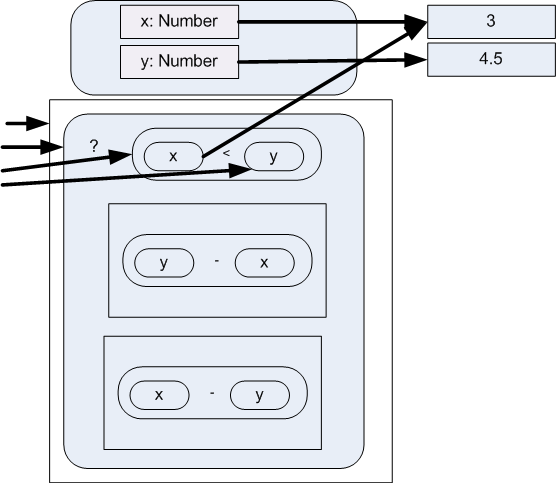
In the next step, the y node is evaluated and deselected.
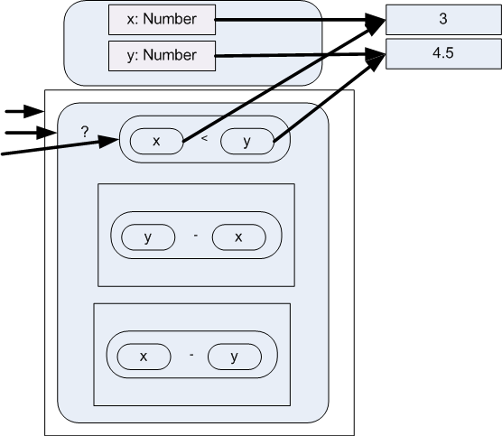
Now the "<" node is evaluated and deselected. Note that the "x" and "y" nodes lose their edges in the same step. The general rule is that, once such an edge is used, it isn't needed any more and so it is deleted from the graph.
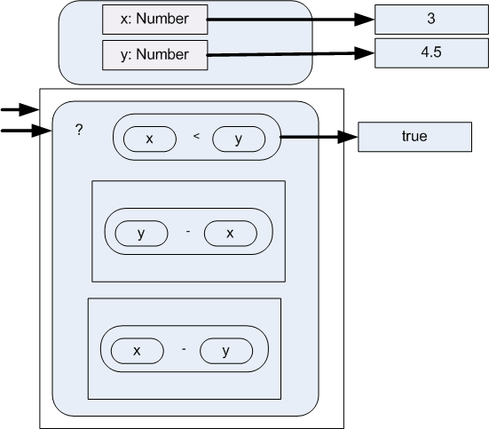
In the next step, the second child of the alternation ("?") node is selected and the edge from the selection expression is deleted. After two more steps we are in the following situation.
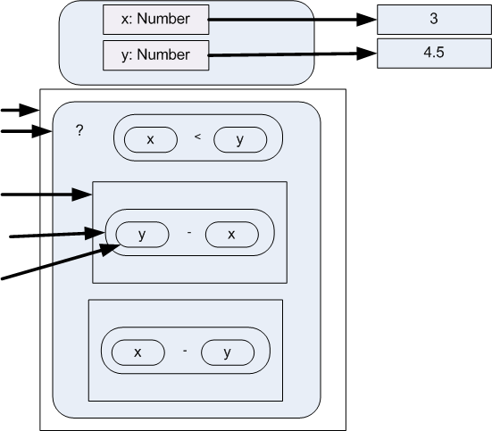
Now we evaluate the "y-x" expression, much as we evaluated the "x < y" expression...
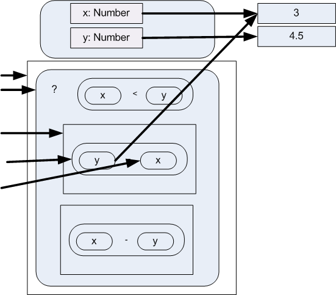
... arriving at the following.
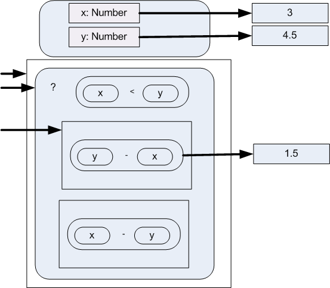
Once the final child of a SEQ is evaluated, its value becomes the value of the SEQ.
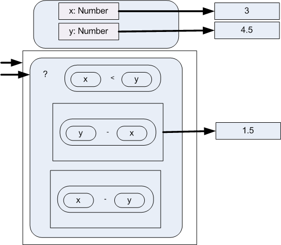
Once the selected SEQ of an alternation node has a value, that SEQ's value become the alternation node's value.
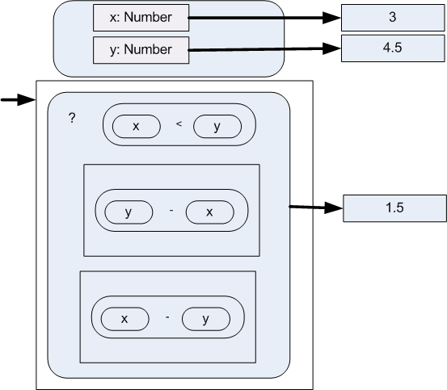
Here we have another SEQ whose final child has been evaluated and so, after another step, we have:
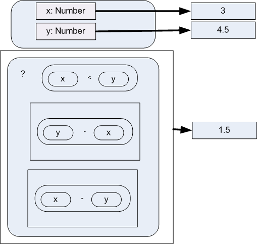
At this point the body of the method has a value and so we are done.
From the above example we can see the desired behaviour at each step for four categories of nodes.
When stepped the value is looked up and mapped to the current node. The selected node stack is popped
When stepped:
If there is an unmapped child node, push a new selection edge targetting the leftmost such child.
Otherwise. Do the operation. Map the current node to the result. Unmap all the children. Pop the selected node stack.
(It is an invariant that at most one child of a seq can be mapped.)
When stepped:
If there are no children, map the node to the null value.
Otherwise: If no child is mapped, select the first child.
Otherwise: If the last child is mapped: Map this node to the value of the last child. Unmap the last child.
Otheriwise. (Some child that is not last is mapped): Unmap the mapped child. Select the following child.
It is an invariant that at most one child of a seq can be mapped.)
When stepped:
If no child is mapped: Map the first child.
If the first child is mapped: It should be the case that the value is either true or false. This should have been checked by type checking. Just in case, flag an error in case the value is neither true nor false.
Unmap the child.
Select the second (in case of true) or third (in case of false) child.
If the second or third child is mapped. Unmap the child. Map this node to the same value.
Similar evaluation strategies can be developed for other node types.
(It is an invariant that at most one child of a seq can be mapped.)
When stepped
If no child is mapped: Map the first child.
If the first child is mapped: It should be the case that the value is either true or false. This should have been checked by type checking. Just in case, flag an error in case the value is neither true nor false.
Unmap the child.
If the value was true: Select the second child
If the value was false: Map the while node to the null value. Pop the selection stack.
If the second child is mapped. Unmap the child. Select the first child.
This is very similar to an n-ary operation at the start
When stepped:
If there is an unmapped child node, push a new selection edge targetting the leftmost such child.
If all children are mapped and the label on the selection edge is 0.
Find field m in that object. (Error if there is none.)
If the value of the field is not a method value, then Error.
Make a copy of the method. Push it on the method stack.
Select the method copy's body.
Replace the 0 with a 1
If all children are mapped and the label on the selection edge is 1.
There should be one method above this one and its body b should be mapped.
Map this node to the value that b is mapped to.
Unmap b.
Unselect this node.